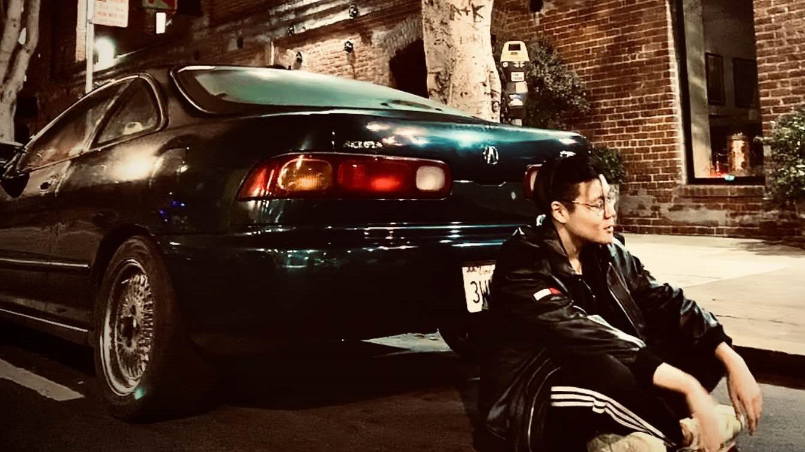
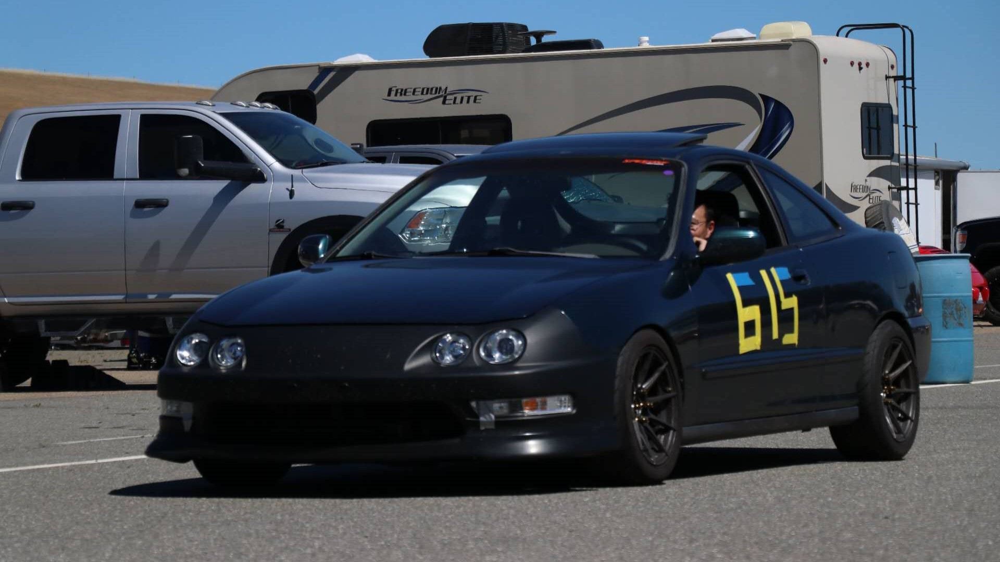
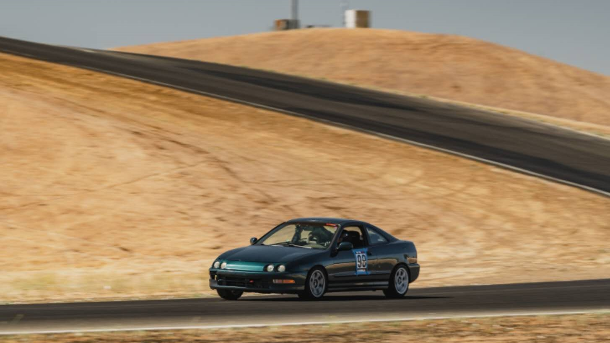

Mod List / Car Specs
- Godspeed Monomax
- Buddyclub P1 Front UCA
- ASR Rear LCA
- ASR Rear Brace
- ASR 1in Sway-bar
- Rays Gramlights 57DR
- Kumho V730
97' Acura Integra LS
After my first 98’s Acura Integra GSR was totaled, I was looking forward to get another Integra because I felt there were a lot of modifications that I wanted to do but didn’t get to do so. One day, My friend asked me if I still want a Integra, because his friend is selling one with an upgraded engine, a 97’s Acura Integra LS with a JDM Type R engine swap. I was very interested in that car and bought the car in a few days. I owned this car the longest, and I enjoyed driving it, especially with the upgraded engine that was able to rev to 9,000 RPM!
I also learned how to work on car through this car. It’s a car from 1997, and there are a lot of maintenance is required to get them run perfectly. I also got into racetrack driving by attending track day with my car. Considering the operating condition on race tracks, there are also a lot of upgrades or modifications required for the car. By reading through many forums and watching a lot of Youtube videos, I started to learn more about how car works and how to work on cars.
I really like this car, but the main reason I was into Integra is I like the Japanese front end of the Integra. But it was very hard to find the front end swapped parts for sale and the condition of the upgraded engine is became worse because participate in multiple track events. So I decided to find another white Integra with the Japanese front end, because it’s where everything started for me.
